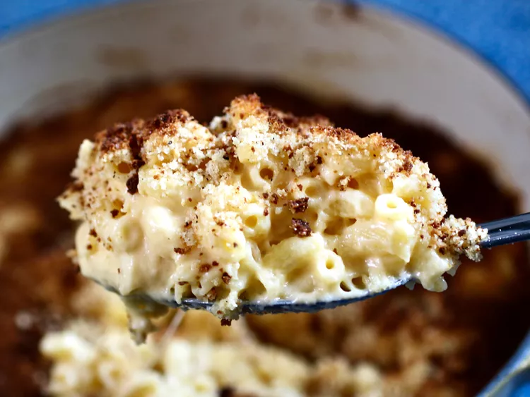

Dutch Oven Macaroni & Cheese
Vegetarian Red Lentil Chili

Description
This Dutch oven mac and cheese is a staple in my home. I sometimes add burger meat or bacon to it to liven it up
but it's delicious enough on its own! Regularly served as the main course with just a veggie side, as it can be
a bit heavy if you're a mac and cheese lover who can't resist seconds (like me).
Ingredients
- 1 (12 ounce) package seashell pasta
- 4 tablespoons salted butter
- 4 tablespoons all-purpose flour
- 1 cup milk
- 1 cup heavy cream
- 1 cup shredded sharp Cheddar cheese
- 1 cup shredded medium Cheddar cheese
- 1 cup grated Parmesan cheese, or to taste
- 1 cup panko bread crumbs, or as needed
- ½ teaspoon salt
- ½ teaspoon garlic salt
- ½ teaspoon ground black pepper
- ¼ teaspoon onion powder
- ¼ teaspoon taco seasoning mix
Steps
-
Preheat the oven to 400 degrees F (200 degrees C).
-
Bring a large pot of salted water to a boil. Add shells and cook, stirring occasionally, until tender yet
firm to the bite, about 9 minutes. Drain and set aside.
-
Heat an oven-safe Dutch oven over medium heat. Melt butter and flour in the hot pot, stirring, until
blended; pour in milk and heavy cream, whisking continuously, until mixture comes to a boil. Continue to
boil, stirring continuously, for 2 minutes. Reduce heat to medium-low; continue to stir until sauce
thickens, about 10 minutes.
-
Slowly fold in cheeses until melted and smooth. It is okay to raise the heat if you have to, just remember
to keep stirring while the heat is on. Fold in cooked pasta until it is coated with cheese.
-
Combine panko bread crumbs, salt, garlic salt, black pepper, onion powder, and taco seasoning in a bowl.
Sprinkle macaroni mixture with just enough of the bread crumbs to coat most of the surface; you should still
see some pasta underneath the bread crumbs.
-
Bake in the preheated oven for 20 minutes. Turn on the oven's broiler and continue to cook until crust is
golden brown and crisp, about 3 to 5 minutes. Remove from the oven and let sit for at least 15 to 20 minutes
before serving.